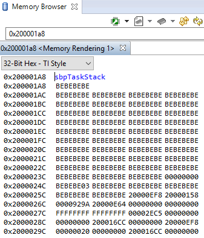

External Resources¶
- Debugging common application problems with TI-RTOS video presentation on training.ti.com.
Debug Interfaces¶
The CC2640R2F platform supports the cJTAG (2-wire) and JTAG (4-wire) interfaces. Any debuggers that support cJTAG, like the TI XDS100v3 and XDS200, work natively. Others interfaces, like the IAR I-Jet and Segger J-Link, can only be used in JTAG mode but their drivers inject a cJTAG sequence which enables JTAG mode when connecting. The hardware resources included on the devices for debugging are listed as follows. Not all debugging functionality is available in all combinations of debugger and IDE.
- Breakpoint unit (FBP) – 6 instruction comparators, 2 literal comparators
- Data watchpoint unit (DWT) – 4 watchpoints on memory access
- Instrumentation Trace Module (ITM) – 32 × 32 bit stimulus registers
- Trace Port Interface Unit (TPIU) – serialization and time-stamping of DWT and ITM events
The SmartRF06 Board contains a XDS100v3 debug probe, and the CC2650 LaunchPad contains the XDS110 debug probe. These debuggers are used by default in the respective sample projects.
Connecting to the XDS Debugger¶
If only one debugger is attached, the IDE uses it automatically when you click
the  button in CCS or
button in CCS or  in IAR.
in IAR.
If multiple debuggers are connected, you must choose the individual debugger to use. The following steps detail how to select a debugger in CCS and IAR.
Configuring Debugger in CCS¶
To select a specific debugger in CCS, do as follows:
Find Serial Number¶
To find the serial number for XDS100v3 debuggers, do as follows.
- Open a command prompt.
- Run
C:\ti\ccsv6\ccs_base\common\uscif\xds100serial.exeto get a list of serial numbers of the connected debuggers.
For XDS110 debuggers (LaunchPads), run the following command: c:\ti\ccsv6\ccs_base\common\uscif\xds110\xdsdfu.exe -e
Configure Serial Number¶
|

|
|
|
|

|
|

|
Configuring Debugger in IAR¶
To debug using IAR, do as follows.
- Open the project options (Project -> Options)
- Go to the Debugger entry.
- Go to Extra options.
- Add the following command line option:
--drv_communication=USB:#select
Adding this command line option makes the IAR prompt which debugger to use for every connection.
Breakpoints¶
Both IAR and CCS reserve one of the instruction comparators for stepping etc. Five hardware breakpoints are available for debugging. This section describes setting breakpoints in IAR and CCS.
Breakpoints in CCS¶
To toggle a breakpoint, do any of the following.
- Double-click the area to the left of the line number.
- Press Ctrl+Shift+B.
- Right-click on the line.
A breakpoint set on line 207 looks like the following.

Figure 103. Breakpoint on line 207. Debugger halted at start of main().
For an overview of the active and inactive breakpoints, click on View –> Breakpoints.

Figure 104. List of breakpoints. Right-click to edit options, or de-select to deactivate.
To set a conditional break, do as follows.
- Right-click the breakpoint in the overview.
- Choose Properties.
When debugging, Skip Count and Condition can help skip a number of breaks or only break if a variable is a certain value.
Note
Conditional breaks require a debugger response and may halt the processor long enough to break an active RF connection, or otherwise disrupt timing on the debug target.
Breakpoints in IAR¶
To toggle a breakpoint, do any of the following.
- Single-click the area to the left of the line number.
- Go to the line and press F9 to toggle breakpoint
- Right-click on the line and select Toggle Breakpoint (Code).
A breakpoint looks like this:

Figure 105. Breakpoint on PIN_init(). Debugger halted at start of main().
For an overview of the active and inactive breakpoints, click View –> Breakpoints.
Figure 106. List of breakpoints. Right-click to edit options, or de-select to deactivate.
To set a conditional break, do as follows.
- Right-click the breakpoint in the overview.
- Choose Edit....
When debugging, Skip Count and Condition can help skip a number of breaks or only break if a variable is a certain value.
Note
Conditional breaks require a debugger response and may halt the processor long enough to break an active RF connection, or otherwise disrupt timing on the debug target.
Considerations on Breakpoints¶
Breakpoints and Timing¶
Synchronous RF protocols like the Bluetooth low energy protocol are timing sensitive, and breakpoints can easily halt the execution long enough to lose network timing and break the link.
To still be able to debug, place breakpoints as close as possible to where the relevant debug information can be read or step through the relevant code segment to debug.
After you hit a breakpoint and read out the necessary debug information, it is recommended that you reset the device and re-establish the connection.
Breakpoints and Optimization¶
When compiler optimizations are enabled, toggling a breakpoint on a line of C code may not result in the expected behavior. Some examples include the following.
- Code is removed or not compiled in
- Toggling a breakpoint in the IDE results in a breakpoint some other unintended place and not on the selected line. Some IDEs disable breakpoints on nonexisting code.
- Code block is part of a common subexpression
- For example, a breakpoint might toggle inside a function called from one other function, but can also break due to a call from another unintended function.
- An if clause is represented by a conditional branch in assembly
- A breakpoint inside an if clause always breaks on the conditional statement, even if not executed.
TI recommends selecting an optimization level as low as possible when debugging. See Optimizations for information on modifying optimization levels.
Watching Variables and Registers¶
IAR and CCS provide several ways of viewing the state of a halted program. Global variables are statically placed during link-time and can end up anywhere in the RAM available to the project or potentially in flash if they are declared as a constant value. These variables can be accessed at any time through the Watch and Expression windows.
Unless removed due to optimizations, global variables are always available in these views. Local variables or variables that are only valid inside a limited scope are placed on the stack of the active task. Such variables can also be viewed with the Watch or Expression views, but can also be automatically displayed when breaking or stepping through code. To view the variables through IAR and CCS, do as follows.
Variables in CCS¶
You can view Global Variables by doing either of the following.
- Select View –> Expressions
- Select a variable name in code.
- Right-click and select Add Watch Expression.

Figure 107. Variable watch window. Note that you can cast values, get address and sizeof, etc.
- Select View –> Variables to
auto-variablesthat are present at the current location when stepping through code.

Figure 108. Local variables. This screenshot is taken during execution of the Simple Peripheral init function.
Variables in IAR¶
To view Global Variables, do either of the following.
- Right-click on the variable.
- Select Add to Watch: varName.
- Select View –> Watch n
- Enter the name of the variable.
Figure 109. Variable watch window. Note that you can cast values, get address and sizeof, etc.
View –> Locals show the local variables in IAR.

Figure 110. Local variables. This screenshot is taken during execution of the Simple Peripheral init function.
Considerations When Viewing Variables¶
Local variables are often placed in CPU registers and not on the stack. These variables also have a limited lifetime even within the scope in which they are valid, depending on the optimization performed. Both CCS and IAR may struggle to show a particular variable due to its limited lifetime. The solution when debugging is as follows.
- Move the variable to global scope, so it remains accessible in RAM.
- Make the variable volatile, so the compiler doesn’t place the value in a register.
- Make a shadow copy of the variable that is global and volatile.
IAR may remove the variable during optimization and inline the usage of the
value. If so, add the __root directive in front.
Memory Watchpoints¶
As mentioned in Debug Interfaces, the DWT module contains four memory watchpoints that allow breakpoints on memory access. The hardware match functionality looks only at the address. If intended for use on a variable, the variable must be global. Using watchpoints is described for IAR and CCS as follows.
Note
If a data watchpoint with value match is used, two of the four watchpoints are used.
Watchpoints in CCS¶
- Right-click on a global variable.
- Select Breakpoint –> Hardware Watchpoint
- Go to the list of breakpoints (View –> Breakpoints)
- Right-click and edit the Breakpoint Properties to configure the watchpoint.

Figure 111. Adding a watchpoint on a variable.
This example configuration ensures that if 0x42 is written to the memory location for Characteristic 1 in the Bluetooth low energy simple_peripheral example project the device halts execution.
Figure 112. Configuring a hardware watchpoint to break on 8-bit write with value 0x42.
Watchpoints in IAR¶
- Right-click a variable (global).
- Select
Set Data Breakpoint for 'myVar'to add it to the active breakpoints. - Go to the list of breakpoints (View –> Breakpoints)
- Choose Edit... to set up whether the watchpoint should match on read, write, or any access.

Figure 113. Configuring a hardware watchpoint to break on 8-bit write with value 0x42.
TI-RTOS Object Viewer¶
Both IAR and CCS include the RTOS Object Viewer (ROV) plug-in that provides insight into the current state of TI-RTOS, including task states, stacks, and so forth. Because both CCS and IAR have a similar interface, these examples discuss only CCS.
To access the ROV in IAR:
- Use the TI-RTOS menu on the menu bar.
- Select a subview.
To access the ROV in CCS:
- Click the Tools menu.
- Click RTOS Object View (ROV).
This section discusses some ROV views useful for debugging and profiling. More details can be found in the TI-RTOS User’s Guide, including documentation on how to add log events to application code.
Warning
When using autosized heap, the ROV may display errors when accesing modules such as Task and Heap for ROV Classic. In order to use ROV with an autosized heap, the following steps may be taken:
- – CCS:
- Use ROV2
- – IAR:
- See the BLE-Stack wiki page for a workaround using ROV Classic with autosized heap.
Scanning the BIOS for Errors¶
The BIOS Scan for errors view goes through the
available ROV modules and reports on errors. This functionality can
be a good point to start if anything has gone wrong. This
scan only shows errors related to TI-RTOS modules and only the
errors it can catch.

Figure 114. Scan for errors. Here a Task Stack has been overrun.
Viewing the State of Each Task¶
The Task Detailed view is useful for seeing the state of
each task and its related runtime stack usage. This example shows
the state the first time the user-thread is called. Figure 115.
shows the Bluetooth low energy stack task, represented by its ICall proxy,
the Idle task, the simple_peripheral task and the GAPRole task.

Figure 115. Detailed view of the Tasks. Notice the address of the overrun task matches the instance id from Scan for errors.
The following list explains the column in Figure 115.
- address
- This column shows the memory location of the Task_Struct instance for each task.
- priority
- This column shows the TI-RTOS priority for the task.
- mode
- This column shows the current state of the task.
- fxn
- This column shows the name of the entry function of the task.
- arg0, arg1
- These columns show abitrary values that can be given to entry function of the task. In the image, the ICall_taskEntry is given 0xb001, which is the flash location of the entry function of the RF stack image and 0x20003a30 (the location of bleUserCfg_t user0Cfg, defined in main()).
- stackPeak
- This column shows the maximum run-time stack memory used based on watermark in RAM, where the stacks are prefilled with 0xBE and there is a sentinel word at the end of the run-time stack.
Note
Function calls may push the stack pointer out of the run-time stack, but not actually write to the entire area. A stack peak near stackSize but not exceeding it may indicate stack overflow.
- stackSize
- This column shows the size of the runtime stack, configured when instantiating a task.
- stackBase
- This column shows the logical top of the runtime stack of the task (usage starts at stackBase + stackSize and grows down to this address).
Viewing the System Stack¶
The Hwi Module view allows profiling of the system stack
used during boot or for main(), Hwi execution, and Swi execution.
See System Stack for more information on the system
stack.

Figure 116. Viewing the System Stack in Hwi
The hwiStackPeak, hwiStackSize, and hwiStackBase can be used to check for system stack overflow.
Using the Memory Browser¶
Both IAR and CCS are able to show a representation of the memory on the device. In CCS, you can index by address or by symbol name. As an example, consider the stack that was overrun in Figure 115.:
Simple Peripheral Task’s stack. Note BE watermark |
GAPRole Task’s stack. Note it’s completely filled. |

|

|
The solution in this case would be to increase the stack size for the failing task
and see what the stack peak really is. The stackPeak reported is relying on
how many watermark bytes are overwritten, so it can’t know how much the overrun
amounts to.
Because stacks are utilized from higher addresses towards lower addressed (upwards in the picture), stacks that overrun will tend to overwrite data at locations immediately before the stack.
Debugging Common Heap Issues¶
As described in Dynamic Memory Allocation, the Heap Manager and its heap are used to allocate messages between the Bluetooth low energy stack task and the application task and as dynamic memory allocations in the tasks, as well as in TI-RTOS.
Profiling functionality is provided for the heap but is not
enabled by default. Therefore, it must be compiled in by adding
HEAPMGR_METRICS to the defined preprocessor symbols. This
functionality is useful for finding potential sources for
unexplained behavior and to optimize the size of the heap. When
HEAPMGR_METRICS is defined, the variables and functions listed as
follows become available. Global variables:
- heapmgrBlkMax
- The maximum amount of simultaneous allocated blocks
- heapmgrBlkCnt
- The current amount of allocated blocks
- heapmgrBlkFree
- The current amount of free blocks
- heapmgrMemAlo
- The current total memory allocated in bytes
- heapmgrMemMax
- The maximum amount of simultaneous allocated memory in blocks (this value must not exceed the size of the heap)
- heapmgrMemUb
- The furthest memory location of an allocated block, measured as an offset from the start of the heap
- heapmgrMemFail
- The amount of memory allocation failure (instances
where
ICall_malloc()has returned NULL)
Furthermore when using a TI-RTOS based heap such as HeapMem or HeapTrack, there is additional debugging capability that can be used.
Functions¶
Note the below functions are enabled only for the legacy OSAL heap, TI-RTOS based heap implementations offer native support for their functionality.
void ICall_heapGetMetrics(u16 *pBlkMax, u16 *pBlkCnt, u16 *pBlkFree, u16 *pMemAlo, u16 *pMemMax, u16 *pMemUb)- Returns the previously described variables in the pointers passed in as parameters
int heapmgrSanityCheck(void)- Returns 0 if the heap is ok; otherwise, returns a nonzero (that is, an array access has overwritten a header in the heap)
However, the get stats function is available to all three supported heap configurations.
ICall_getHeapStats(ICall_heapStats_t)- Returns a pointer to the Heap statics structure.
The heap stats stucture, is defined as below:
typedef struct { uint32_t totalSize; uint32_t totalFreeSize; uint32_t largestFreeSize; }ICall_heapStats_t;
Determining the Auto Heap Size¶
The following procedure can be used to view the size of the ICall
heap when the auto heap size feature is enabled (HEAPMGR_SIZE=0).
At runtime, view the value of the global memory symbol HEAPMGR_SIZE
after ICall_init() has been executed in main(). The value of
HEAPMGR_SIZE is the total size of the ICall heap. See
HEAPMGR_INIT() in heapmgr.h for the source code implementation.
- In IAR: View -> Watch -> Watch 1, add
HEAPMGR_SIZE - In CCS Debug Session: View -> Expressions, add
HEAPMGR_SIZE
Note
The auto heap size feature does not determine the amount of heap needed for the application. The system designer must ensure that the heap has the required space to meet the application’s runtime memory requirements.
Due to memory placement, the actual heap size may be up to 4 bytes less.
To calculate the size of the heap by inspecting the map file:
The size of the heap is the difference between the address of the last item in the .bss section and the start address of the system stack (CSTACK). For example, the
20003f48 heapEnd
20001cc1 heapStart
The size of the ICall heap in this example is defined as:
0x20003f48 - 0x20001cc1 = 0x2287 or 8839 bytes for the heap.
Optimizations¶
While debugging, turn off or lower optimizations to ease single-stepping through code. Optimization level can be configured at the project, file and function levels.
Project-Wide Optimizations¶
For debugging, ideally, the project-wide settings for optimization should be as low as possible. There may not be enough available space on the target to do this, but lowering just a couple of levels can be helpful.
In IAR
Project Options –> C/C++ Compiler –> Optimizations

Figure 117. Project-level optimization setting in IAR
In CCS
Project Properties –> CCS Build –> ARM Compiler –> Optimization

Figure 118. Project-level optimization setting in CCS
Single-File Optimizations¶
Note
Do single-file optimizations with care because this also overrides the project-wide preprocessor symbols.
In IAR
- Right-click on the file in the Workspace pane.
- Choose Options.
- Check Override inherited Settings.
- Choose the optimization level.
In CCS
- Right-click on the file in the Workspace pane.
- Choose Properties.
- Change the optimization level of the file using the same menu in the CCS project-wide optimization menu.
Single-Function Optimizations¶
Using compiler directives, you can control the optimization level of a single function.
In IAR
Use #pragma optimize=none before the function definition to deoptimize the entire function, that is, as follows.
#pragma optimize=none
static void myFunction(int number)
{
// ...
return yourFunction(other_number);
}
In CCS
#pragma FUNCTION_OPTIONS(myFunction, "--opt_level=0")
static void myFunction(int number)
{
// ...
return yourFunction(other_number);
}
Loading TI-RTOS in ROM Symbols¶
Some of the TI-RTOS kernel modules are included in ROM, and executed from ROM in order to save Flash space for the application. This can lead to some confusion, when only addresses are shown in the disassembly view and the call-stack view.
All TI-RTOS kernel code in ROM starts with address 0x1001xxxx. In order to
make sense of the ROM’ed code, you need to include the symbol files in your
debug session.
In IAR
Figure 119. Adding symbol information for the BIOS kernel in ROM
- In the project options, go to
DebuggerandImages, then add the image <SDK_INSTALL_DIR>\kernel\tirtos\packages\ti\sysbios\rom\cortexm\cc26xx\r2\golden\CC26xx\rtos_rom.xem3- Check the box for ‘Debug info only’, and use Offset = 0.
In CCS

Figure 120. Adding symbol information for the BIOS kernel in ROM, via Add Symbols.
- While in debug mode, click the drop-down button next to the Load Program icon
- Select Add Symbols..
- Select Browse.. and find
<SDK_INSTALL_DIR>\kernel\tirtos\packages\ti\sysbios\rom\cortexm\cc26xx\r2\golden\CC26xx\rtos_rom.xem3
Deciphering CPU Exceptions¶
Several possible exception causes exist. If an exception is caught, an exception handler function can be called. Depending on the project settings, this handler may be a default handler in ROM, which is just an infinite loop or a custom function called from this default handler instead of a loop.
When an exception occurs, the exception may be caught and halted in debug mode immediately, depending on the debugger. If the execution halted manually later through the Break debugger, it is then stopped within the exception handler loop.
Exception Cause¶
With the default setup using TI-RTOS, the exception cause can be found in the System Control Space register group (CPU_SCS) in the register CFSR (Configurable Fault Status Register). The ARM Cortex-M3 User Guide describes this register. Most exception causes fall into the following three categories.
- Stack overflow or corruption leads to arbitrary code execution.
- Almost any exception is possible.
- A NULL pointer has been dereferenced and written to.
- Typically (IM)PRECISERR exceptions
- A peripheral module (like UART, Timer, and so forth) is accessed
without being powered.
- Typically (IM)PRECISERR exceptions
The CFSR register is available in View –> Registers in IAR and CCS.
When an access violation occurs, the exception type is IMPRECISERR because writes to flash and peripheral memory regions are mostly buffered writes.
If the CFSR:BFARVALID flag is set when the exception occurs (typical for PRECISERR), the BFAR register in CPU_SCS can be read out to find which memory address caused the exception.
If the exception is IMPRECISERR, PRECISERR can be forced by manually disabling buffered writes. Set [CPU_SCS:ACTRL:DISDEFWBUF] to 1, by either manually setting the bit in the register view in IAR/CCS or by including <hw_cpu_scs.h> from Driverlib and calling the following.
#include <ti/devices/cc26x0r2/inc/hw_cpu_scs.h>
//..
int main()
{
// Disable write-buffering. Note that this negatively affect performance.
HWREG(CPU_SCS_BASE + CPU_SCS_O_ACTLR) = CPU_SCS_ACTLR_DISDEFWBUF;
// ..
}
Using TI-RTOS and ROV to Parse Exceptions¶
To enable exception decoding in the RTOS Object View (ROV) without using too much memory, use the Minimal exception handler in TI-RTOS. The default choice in the BLE-Stack projects is to use no exception handler.
To set this up, change the section of the TI-RTOS configuration file that relates to M3Hwi so that it looks like the code below:
//m3Hwi.enableException = true;
m3Hwi.enableException = false;
//m3Hwi.excHandlerFunc = null;
m3Hwi.excHookFunc = "&execHandlerHook";
Then, make a function somewhere with the signature
void (*Hwi_ExceptionHookFuncPtr)(Hwi_ExcContext*); such as the one below:
#include <ti/sysbios/family/arm/m3/Hwi.h>
// ...
volatile uintptr_t *excPC = 0;
volatile uintptr_t *excCaller = 0;
// ...
void execHandlerHook(Hwi_ExcContext *ctx)
{
excPC = ctx->pc; // Program counter where exception occurred
excCaller = ctx->lr; // Link Register when exception occurred
while(2);
}
Setting m3Hwi.enableException to false enables the minimal handler,
which fills out the global Hwi_ExcContext structure that the ROV
looks at to show the decoded exception. By setting up an
excHookFunc, the minimal exception handler will call this function
and pass along a pointer to the exception context for the user to
work with. This structure is defined in
<ti/sysbios/family/arm/m3/Hwi.h>.
When an exception occurs, the device should end up in that infinite loop. Inspect the ROV -> Hwi -> Exception information.

Figure 121. Decoded exception, intentional write to address 0x0013 which is illegal. Note that writebuffering has been disabled to get a precise error location, and that m3Hwi.enableException has been set to false to get the decoding.
In this case, a bus fault was forced in the function writeToAddress by dereferencing address 0x0013 and trying to write to it:
void writeToAddress(uintptr_t *addr, int val)
{
*(int *)addr = val;
}
// ..
void taskFxn(...)
{
// ..
writeToAddress( (void*)19, 4 ); // Randomly chosen values
}
The write instruction was placed on line 79 of application.c, as indicated. To get a precise location, the write buffer was disabled as described earlier.
It can be instructive to look at the disassembly view for the locations specified by PC (program counter) and LR (link register). PC is the presumed exception location, and LR is normally the location the failing function should have returned to. As an example, the PC at this exception:

Figure 122. Here the pc from the decoded exception was looked up in the disassembly
view.
Some forensics is required here. We have from the Hwi decoding in ROV (and from
the exception context in the exception hook) that the program counter was
0x708e when the exception occurred.
At that location there is a store instruction str r0, [r1] meaning, store
the value in R0 to the memory address in R1. The business with SP in the
figure above is related to optimization being turned off, so all local variables
are stored on the stack, even though in this case R0 and R1 could have been used
directly from the caller.
Now we know that the exception occured because soneone called writeToAddress with an invalid address.
Thanks to the exception decoder we can easily find the call site by
looking at the call stack, but if the call stack isn’t helpful, we can look
at lr, which is seen in the exception decoder to be 0x198f

Figure 123. Call site as specified in lr. Note that lr is the instruction after the
call to writeToAddress because execution would have resumed here.
We can see here that R0 and R1 are initialized with constants. This means that some programmer has intentionally called the write function with an address that causes a busfault.
Most often the reason for a bus-fault is that a pointer is not initialized
and a function like writeToAddress gets the pointer, assumes it’s valid and
dereferences the pointer and writes to the invalid address.
Debugging Memory Problems¶
This section describes how to debug a situation where the program runs out of memory, either on the heap or on the runtime stack for the individual thread contexts. Exceeding array bounds or dynamically allocating too little memory for a structure corrupts the memory and can cause an exception like INVPC, INVSTATE, IBUSERR to appear in the CFSR register.
Task and System Stack Overflow¶
If an overflow on the runtime stack of the task or the system stack occurs (as found using the ROV plug-in), perform the following steps.
- Note the current size of the runtime stack of each task.
- Increase by a few 100 bytes as described in Initializing a Task and System Stack
- Reduce the runtime stack sizes so that they are larger than their respective stackPeaks to save some memory.
Dynamic Allocation Errors¶
Debugging Common Heap Issues describes how to use the ICall Heap profiling functionality. To check if dynamic allocation errors occurred, do as follows:
- Check whether
heapmgrMemAloorheapmgrMemAloare close toHEAPMGR_SIZE - Check memFail to see if allocation failures have occurred.
- Call the sanity check function.
If the heap is sane but there are allocation errors, increase
HEAPMGR_SIZE and see if the problem persists.
You can set a breakpoint in heapmgr.h in HEAPMGR_MALLOC() on the
line hdr = NULL; to find an allocation that is failing.
Check System Flash and RAM Usage With Map File¶
Both application and stack projects produce a map file which can be used to compute the combined flash and RAM system memory usage. Both projects have their own memory space and both map files must be analyzed to determine the total system memory usage. The map file is in the output folder of the respective project in IAR. To compute the total memory usage, do as follows.
- Open the application map file (that is, simple_peripheral_cc2650r2lp_app.map).
Note
At the end of the file, three lines contain a breakdown of memory usage for read-only code, read-only data, and read/write data.
- Add the two values for read-only code and read-only data memory.
Note
This sum is the total flash memory usage for the application project. The read/write data memory is the total RAM usage by the application project.
- Note these values.
- Open the stack map file.
- Compute the same flash and RAM values for the stack project.
- Add the total flash memory value from the application with the total flash usage of the stack to determine the total system flash usage.
- Add the total RAM usage from the application with the stack to get the total system RAM usage.
For CCS, the map file of the respective project gives a summary of flash and RAM usage. To determine the remaining available memory for each project, see Flash and RAM. Due to section placement and alignment requirements, some remaining memory may be unavailable. The map file memory usage is valid only if the project builds and links successfully.